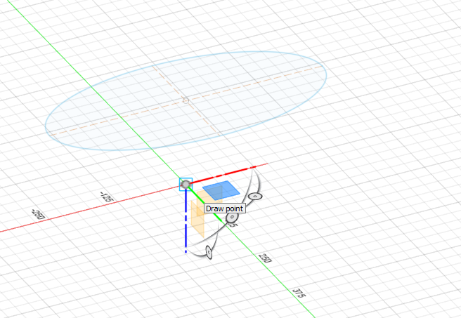

Lokaverkefni
Lokaverkefnið er hugsað sem hópaverkefni, en þar sem ég er á austurlandinu og með góðan aðgang að fablab austurlands fékk ég að vinna verkefnið sem einstaklingsverkefni. verkefnið sem ég valdi mér var að teikna vask í fuision 360 og fræsa í shopbot fræsaranum úr timbri í 2.5D. Enn þurfti ég því að sjá um allt ferlið sjálfur, skipulagningu, teikning í fuison, hönnun í v-carve, líma saman efni, fræsingu, heimasíðugerð og gerð myndbands.
Síðan þá hefur mig langað til að hanna sjálfur og fræsa vask sem er í 2.5D eða eins og skál í laginu. og varð því loks
Hugmyndin
Um 2018 var ég að fylgjast með aðila í shobbot fræsaranum og datt þá í hug að gera vask úr timbri. Þar sem ég hafði ekki reynslu á fusion eða fræsaran teiknaði ég hann í autocad í mögum lögum og fékk annan aðila til að fræsa stykkin út fyrir mig. Sá vaksur var ekki eins og skál í laginu eins og myndirnar sýna heldur voru beinar hliðar að framan og aftan. Til að vera vaskin vatnsheldan notaði ég epoxy og er buinn að vera í noktun núna í um 4 ár.


Teikning í Fusion 360
 Stærðin á vaskinum er ákveðin, ég nota eclipse hef hringin 500x250 en seinna verður hann minkaður um 10mm í ummál .
Stærðin á vaskinum er ákveðin, ég nota eclipse hef hringin 500x250 en seinna verður hann minkaður um 10mm í ummál .
Frá efri hringum geri ég offset plane 156mm og geri punkt undir miðjum efri hring. þá er búið að ákveða hæðina á modelinu eða 156mm, punkturinn er þá neðsti hlutinn af vasknum..
Nú er að koma forminu á, með að nota loft möguleikan og velja efri hringin og punktin kemur fram form sem er eins og bein keila í laginu. með að breita profile -connected yfir í diretion er hægt að eiga við formið og stilli ég takeoff weight á 1.8.
Hluturinn er nú heilt stykki, til að taka innan úr honum nota ég shell og vel efra planið þar sem skálin á að koma. veggþykktin á vasknum hef ég 10mm.
 Gatið fyrir botnventilin hef ég 40mm og skil eftir um 1mm í botninum. ég sérpantaði botnventil sem er ekki komin enn og þarf því að sníða hann í með útskurðajárni eftirá
Gatið fyrir botnventilin hef ég 40mm og skil eftir um 1mm í botninum. ég sérpantaði botnventil sem er ekki komin enn og þarf því að sníða hann í með útskurðajárni eftirá
Nú er teikningin tilbúin. Nú er að gera hlutina að einu body,hægri smella á bodyið, save as mesh og vista sem stl file.
V-Carve hönnun
Modelið er flutt inn í Vcarve kíki á stillingarnar og stykkið var 158mm á hæðina og breyti því í 156mm, næst er að sneiða hlutinn(slice) í þrjár sneiðar sem eru 52mm sem gengur því upp í 156mm enn hér sést allar sneiðarnar.
Neðsti hluturinn á sletta yfirborðið verður teiknað 8mm göt og einnig á sama stað á neðan á miðjustykkið, í samsetningunni koma 8mm dílar og passa því stykkin nákvæmlega saman.
Miðjustykkið
Efsti hlutinn
Götin teiknuð, þau eru ekki öll í sömu staðsetninu frá miðju og nota ég mirror og geri 2 mismunandi toolpath til að bora í yfirborðið og annan til að bora neðan í stykkin. ég nota 1/4" upcut bita eða um 6mm til að gera 8mm göt
Fyrir fræsinguna í skálina sjálfa byrja ég á 3D roughing bitinn er 1/2" end mill, (57-367 onsrund) pass depth 6mm, stepover 5mm.
EFtir gróffræsinguna er 3D finish, í henni nota ég 1/2" ball nose bita (52-360Bl onsrund) með stepover 7%/0.9mm
Efnið í vaskinn
Efnið sem var notað í vaskinn er úr Gömlu eldúsinnrétingunni minni sem var beyki límtré. efnið var lakkað og þykktarheflaði því lakkið af, límdi saman og heflaði til í áætlaðar stærðir.

Prufu fræsing
Áður enn ég fór að fræsa í endanlega efnið límdi ég saman afgangstimbur úr furu.
Í prufunni fór fræsingin aðeins upp á slétta samsetnigarflötin sem mátti alls ekki, því þá kæmi sár eða rönd í samsetningunni milli sneiða sem þyfti að pússa niður eða fylla. Ég hafði samband við Jón Þór og fór hann með mér yfir boundry offset í 3D fininsh þar sem hægt er að láta fræsaran hætta áður enn hann kemst á yfirborð hlutarinns. Ég notaði síðan miðjuna úr efststu sneiðinni og prófaði að fræsa neðsta stykkið aftur með boundry offset -5mm og var sáttur við útkomuna.
Fræsingin
Fyrir öll stykkin notaði ég center engraving þar sem fræsarinn gengur alltaf út frá miðju stykki. Á fræsiborðið var komið fyrir spoilborð og núllaði x og y fyrir miðju á því bretti. notaði 1/4" bitan og byrjaði að fræsa 8mm göt. á miðju og efsta stykkinu byrjaði ég að bora göt neðan í stykkin, notaði síðan díla til að para saman við spoilborðið til að 3.d fræsingin að ofan passaði við staðsetningargötin.
Fræsingin gékk vel þar sem ég var buinn að gera prufu áður en ég fór í endanlega efnið, enn týndi nokkrum myndum og video af því ferli. Í efsta lagið notaði ég heila borðplötu sem var 1200mmx400mm og 30mm á þykkt, ég límdi því 22mm neðan á miðja plötuna til að ná réttri þykkt á sneiðinni eða 52mm. Vaskurinn kemur því beint ofan í toppplötuna á innréttingunni.
Vaskurinn var svo límdur saman og komst ég ekki lengra í ferlinu. enn næstu skref er að koma fyrir botn tappanum, pússa vaskinn að innan og lakka svo með 2-3 umferðum af epoxy til að gera hann vatnsheldan. Ég er mjög sáttur með hvernig fræsingin og þetta verkefni tókst vel og lærði mikið á þessu ferli bæði á fuision og v-carve.
Takk fyrir mig.